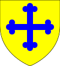
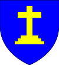

Aged 55
- Margery (1031–1082)
- Laurence II (1034–1090)
- Walter (1035–1086)
- Simon (1039–1040)
- Simon (1040)
- Simon (1042–1089)
- Gervase (1046–1097)
1000–1025 (25)
Inbreeding: 0%
In 1000 he married fifteen-year-old Margery; joyless couple produced a son:| Name | Prt. | CoA | Lifespan | Notes |
|---|---|---|---|---|
| Jocelyn I | |
1001–1056 Aged 55 |
Married Avelina Belper in 1029
|
1025–1056 (31)
Inbreeding: 0%, 1
In 1029 he married nineteen-year-old Avelina Belper; couple produced seven children, of which five survived:| Name | Prt. | CoA | Lifespan | Notes |
|---|---|---|---|---|
| Margery |  |
1031–1082 Aged 51 |
Husbands:
| |
| Laurence II | 1034–1090 Aged 56 |
Married Scholastica Rothbury in 1054
| ||
| Walter | |
1035–1086 Aged 51 |
Married Aldiva Westerham in 1058
| |
| Simon | 1039–1040 Aged 1 |
|||
| Simon | 1040 Aged 0 |
|||
| Simon | 1042–1089 Aged 47 |
Married Christiana Clevedon in 1067 | ||
| Gervase |  |
1046–1097 Aged 51 |
Married Idonea Tidworth in 1074 |
1056–1090 (34)
Inbreeding: 0%, 2
In 1054 he married thirteen-year-old Scholastica Rothbury; joyless union produced fourteen children, yet only five survived:| Name | Prt. | CoA | Lifespan | Notes |
|---|---|---|---|---|
| Avelina | 1057–1058 Aged 1 |
|||
| Jocelyn | 1065–1069 Aged 4 |
|||
| Avelina |  | 1067–1124 Aged 57 |
Husbands:
| |
| Denise | 1069–1072 Aged 3 |
|||
| Jocelyn | 1071–1073 Aged 2 |
|||
| Jocelyn | 1074–1075 Aged 1 |
|||
| Denise | 1074–1093 Aged 19 |
Husbands:
| ||
| Jocelyn II | 1076–1129 Aged 53 |
Married Ida Marlborough in 1095
| ||
| Christiana | 1079–1140 Aged 61 |
Married Richeman Huntly in 1093
| ||
| Eunice | 1080–1140 Aged 60 |
Married Nicholas Brentford in 1094
| ||
| Godfrey | 1082–1085 Aged 3 |
|||
| Walter | 1083–1084 Aged 1 |
|||
| Walter | 1085–1086 Aged 1 |
|||
| Godfrey | 1089–1141 Aged 52 |
1090–1129 (39)
Inbreeding: 0%, 3
In 1095 he married thirteen-year-old Ida Marlborough; matrimony produced three children, yet only one survived:| Name | Prt. | CoA | Lifespan | Notes |
|---|---|---|---|---|
| Scholastica | 1111–1112 Aged 1 |
|||
| Laurence | 1115 Aged 0 |
|||
| Scholastica |  | 1118–1171 Aged 53 |
Married Leonard Bude in 1133
|
1129–1141 (12)
Inbreeding: 0%, 3
1141–1156 (15)
Inbreeding: 0%, 4
In 1110 he married thirteen-year-old Lucia Southampton; loving couple produced three children, yet only one survived:| Name | Prt. | CoA | Lifespan | Notes |
|---|---|---|---|---|
| Agnes | 1123–1126 Aged 3 |
|||
| Leonard | 1125–1127 Aged 2 |
|||
| Eustace II | |
1128–1179 Aged 51 |
Married Hawis Chatteris in 1146
|
1156–1179 (23)
Inbreeding: 0%, 4
In 1146 he married his cousin, fourteen-year-old Hawis Chatteris; happy union produced seven children, of which five survived:| Name | Prt. | CoA | Lifespan | Notes |
|---|---|---|---|---|
| Leonard I | 1159–1208 Aged 49 |
Wives:
| ||
| Hawis |  |
1160–1226 Aged 66 |
Married Leonard Axbridge in 1176 | |
| David | 1163–1166 Aged 3 |
|||
| Alviva | 1164–1222 Aged 58 |
Married Osmer Tidworth in 1177
| ||
| Simon | 1166–1230 Aged 64 |
Married Edith Witham in 1186
| ||
| Agnes | 1174–1211 Aged 37 |
Married Alwin Lyne in 1187
| ||
| Eustace | 1175–1187 Aged 12 |
1179–1208 (29)
Inbreeding: 20%, 5
In 1176 he married thirteen-year-old Avice Bromyard; marriage produced a son, but he didn't survive:| Name | Prt. | CoA | Lifespan | Notes |
|---|---|---|---|---|
| Simon | |
1188–1205 Aged 17 |
1208–1230 (22)
Inbreeding: 20%, 5
In 1186 he married fourteen-year-old Edith Witham; happy marriage produced three children, of which two survived:| Name | Prt. | CoA | Lifespan | Notes |
|---|---|---|---|---|
| Hawis | |
1200–1255 Aged 55 |
Married Isaac Witham in 1223 | |
| Leonard II | 1206–1252 Aged 46 |
Married Hawis Orford in 1223
| ||
| Eustace | 1207–1211 Aged 4 |
1230–1252 (22)
Inbreeding: 27%, 5
In 1223 he married thirteen-year-old Hawis Orford; couple produced four daughters, yet only two survived:| Name | Prt. | CoA | Lifespan | Notes |
|---|---|---|---|---|
| Hawis | 1230–1231 Aged 1 |
|||
| Hawis | 1238–PRSN Aged 61 |
Married Alan Tenterden in 1259 | ||
| Alviva | 1239–1292 Aged 53 |
Married Everard Winsford in 1270
| ||
| Katherine | 1251–1258 Aged 7 |
1252–1298 (46)
Inbreeding: 7%, 5
In 1289 he married thirty-two-year-old Ida Lyne; loving union produced four children, but none survived:| Name | Prt. | CoA | Lifespan | Notes |
|---|---|---|---|---|
| Ida | 1292–PRSN Aged 7 |
|||
| Mabel | 1296–PRSN Aged 3 |
|||
| Berenger II | 1297–PRSN Aged 2 |
|||
| Aldiva | 1299–PRSN Aged 0 |
1298–PRSN (2)
Inbreeding: 20%, 5